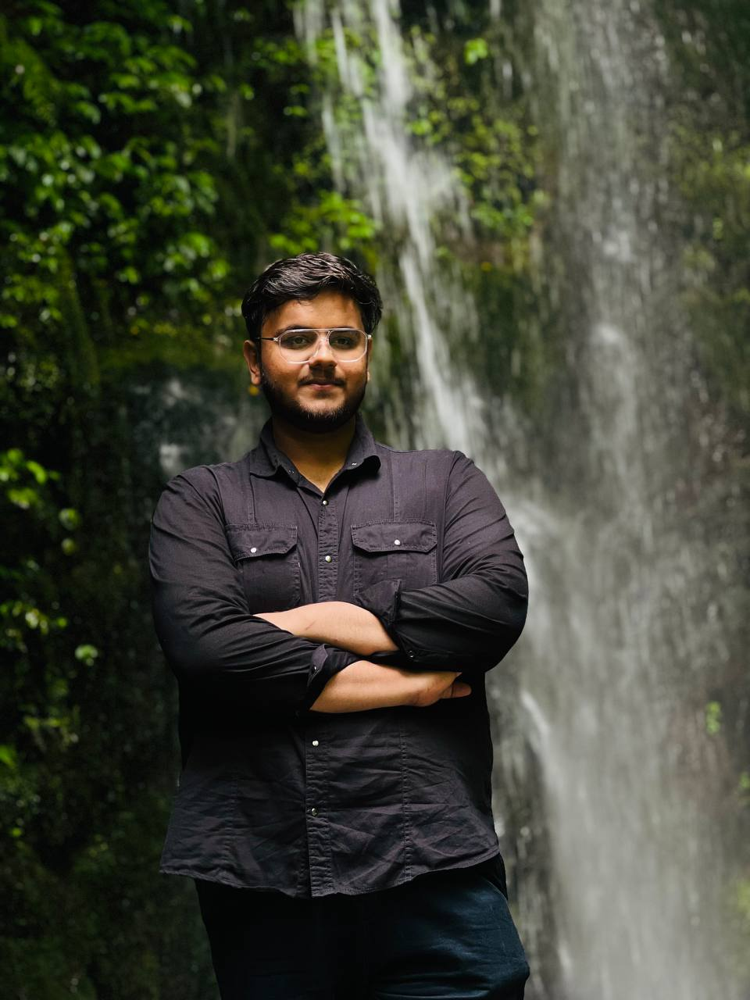

Data Scientist and ML Engineer with strong proficiency in Python, SQL, and modern ML/DL techniques. Adept at building predictive models, NLP applications, and computer vision solutions. Experienced in using tools like OpenCV, Streamlit, and TensorFlow to create real-world AI systems. Hands-on with Docker (containerization, images, networks, running multi-container apps) and AWS EC2 (deploying applications). Passionate about solving complex data problems and contributing to data-driven product innovation.
B.Tech in Computer Science and Engineering
Noida Institute of Engineering and Technology, Greater Noida, India (Nov 2021 – Jun 2025)